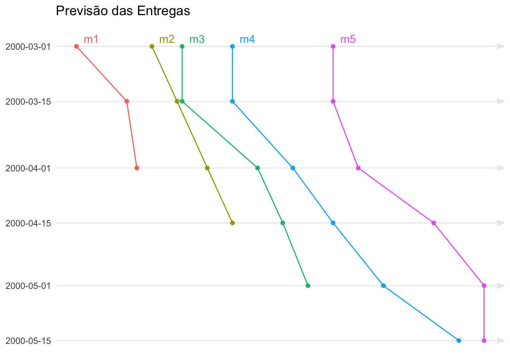

![]()
Quando você trabalho como gerente de projetos a pergunta mais importante que você deve estar preparado para responder é: “Quando acaba?”.
A vantagem de se estimar a data de término é que esta envolve subjetivamente informações sobre benefícios, que se realizam com a disponibilização do resultado esperado. Mas ao contrário de outros fatores - como custo, efetividade do trabalho, ou qualidade do produto - a estimativa do prazo final, em geral é feita a partir de medições sobre o escopo.
Tomemos, por exemplo, a técnica mais conhecida que é a Análise do Valor Agregado. Ela considera a estimativa do prazo final através do cálculo do escopo do trabalho, e por este motivo, a pode gerar distorções nas medições de performance.
Podemos verificar isto através das equações utilizadas para calcular o índice de performance do custo (CPI - Cost Performance Index), e o índice de performance do prazo (SPI - Schedule Performance Index).
O CPI é calculado através da razão entre o Valor Agregado (EV - Earned Value) e o Custo Real (AC - Actual Cost). Se considerarmos um projeto com valor de R$ 100 mil com custo final de R$ 200 mil (o dobro), o índice reflete isto indicando uma performance de 50%:
\[ \begin{align} CPI &= \frac{EV}{AC} \\ &= \frac{100.000}{200.000} \\ &= 0.5 \\ &= 50\% \end{align} \]
Já o SPI é calculado através da razão entre o Valor Agregado e o Valor Planejado (PV - Planned Value). Se o mesmo projeto tivesse durado o dobro do tempo:
\[ \begin{align} SPI &= \frac{EV}{PV} \\ &= \frac{100.000}{100.000} \\ &= 1 \\ &= 100\% \end{align} \] Isso mesmo, o SPI seria de 100%. Isto acontece porque a fórmula não mede prazo (schedule), ela mede escopo ao comparar o escopo entregue (Valor Agregado) contra o escopo planejado (Valor Planejado).
Como estimar o prazo de término de um projeto
Uma forma de conseguir estimar o prazo de entrega do projeto é através de um gráfico de tendências de entregas intermediárias.
Primeiro vamos construir o gráfico e depois analisar o que é preciso fazer para
Considere uma série de entregas intermediárias do projeto aqui representadas pelos indicadores m1, m2, m3, etc. Cada entrega possui um planejamento original e conforme o projeto avança, quinzenalmente a entrega é replanejada, conforme mostrado na tabela abaixo.
```{r}
#| warning: false
#| message: false
library(gt)
entregas %>%
gt() %>%
tab_header(title = "Planejamento de entregas") %>%
opt_align_table_header(align = "left") %>%
cols_label(
status = "Data de Status"
) %>%
tab_spanner(
label = c("Entregas"),
columns = c(m1, m2, m3, m4, m5)
) %>%
sub_missing() %>%
fmt_date(columns = c(status, m1, m2, m3, m4, m5),
date_style = "m_day_year") %>%
tab_options(table.font.size = 12)
```| Planejamento de entregas | |||||
| Data de Status | Entregas | ||||
|---|---|---|---|---|---|
| m1 | m2 | m3 | m4 | m5 | |
| Mar 1, 2000 | Mar 10, 2000 | Mar 25, 2000 | Mar 31, 2000 | Apr 10, 2000 | Apr 30, 2000 |
| Mar 15, 2000 | Mar 20, 2000 | Mar 30, 2000 | Mar 31, 2000 | Apr 10, 2000 | Apr 30, 2000 |
| Apr 1, 2000 | Mar 22, 2000 | Apr 5, 2000 | Apr 15, 2000 | Apr 22, 2000 | May 5, 2000 |
| Apr 15, 2000 | — | Apr 10, 2000 | Apr 20, 2000 | Apr 30, 2000 | May 20, 2000 |
| May 1, 2000 | — | — | Apr 25, 2000 | May 10, 2000 | May 30, 2000 |
| May 15, 2000 | — | — | — | May 25, 2000 | May 30, 2000 |
A cada 15 dias, os prazos são reavaliados ou a data real de conclusão é registrada. As informações mostradas na tabela podem ser representadas visualmente conforme mostra o gráfico a seguir.
```{r}
#| warning: false
#| message: false
# using the function from @Marcelo from this link
# https://stackoverflow.com/questions/43625341/reverse-datetime-posixct-data-axis-in-ggplot
# to invert the data axis:
library(scales) # for as.trans
library(ggtext) # for markdown
library(grid) # arrow
c_trans <- function(a, b, breaks = b$breaks, format = b$format) {
a <- as.trans(a)
b <- as.trans(b)
name <- paste(a$name, b$name, sep = "-")
trans <- function(x) a$trans(b$trans(x))
inv <- function(x) b$inverse(a$inverse(x))
trans_new(name, trans, inverse = inv, breaks = breaks, format=format)
}
rev_date <- c_trans("reverse", "time")
entregas <-
entregas %>%
pivot_longer(cols = c(m1, m2, m3, m4, m5),
names_to = "milestone",
values_to = "previsto")
y_breaks <- entregas %>% distinct(status) %>% arrange(status) %>% pull() %>% as.POSIXct.Date()
m_labels <- entregas %>% filter(status <= min(status)) %>% mutate(status = as.POSIXct.Date(status - 2), previsto = as.POSIXct.Date(previsto + 3))
entregas %>%
mutate(status = as.POSIXct.Date(status),
previsto = as.POSIXct.Date(previsto)) %>%
ggplot(aes(x = previsto, y = status, group = milestone, colour = milestone)) +
geom_point() +
geom_line() +
geom_text(data = m_labels, aes(x = previsto, y = status, label = milestone)) +
scale_y_continuous(trans = rev_date, breaks = y_breaks, labels = scales::date_format()) +
labs(title = "Previsão das Entregas",
x = NULL,
y = NULL) +
theme_minimal() +
theme(
legend.position = "none",
plot.title = element_markdown(lineheight = 1.1),
axis.text.x = element_blank(),
panel.grid.minor = element_blank(),
panel.grid.major.x = element_blank(),
panel.grid.major.y = element_line(arrow = arrow(angle = 20, length = unit(0.1, "inches"), type = "closed"))
)
```
O eixo y deste gráfico representa as diversas datas de status do projeto, enquanto o eixo x representa a data prevista ou realizada de uma entrega na referida data de status (as datas planejadas/realizadas) estão suprimidas para facilitar a leitura do gráfico).
A interpretação do gráfico mostra que existe uma inclinação nas diversas curvas de entrega dos resultados intermediários muito similar. Isto pode ser um indicativo de que a causa dos atrasos está mais relacionada com uma estimativa original errada do que com problemas de performance da equipe, o que geraria inclinações diferentes para cada uma das curvas das várias entregas.
Planejando para poder controlar as entregas
Para poder acompanhar um projeto desta forma é preciso a preparação adequada.
O mais crítico aqui é conseguir criar bons entregáveis intermediários. As principais características destes resultados são:
São mensuráveis. Em geral o indicador de realização é previamente definido junto com a fonte de medição.
Geram valor ao cliente. Quando um resultado é entendido como um valor em si, isto ajuda a evitar que o trabalho relacionado seja alvo de modificações ou tenha seu conteúdo aumentado.
São relativamente isolados de outros trabalhos. Isto é importante para podermos identificar causas de desvios observados. Por exemplo, se uma mesma equipe trabalha em paralelo em resultados diferentes, fica difícil identificar causas das variações que venham a ocorrer.
O uso de gráficos de tendência combinados com um planejamento de entregas intermediárias é uma poderosa ferramenta de planejamento e controle para projetos. A aplicação desta ferramenta é simples e direta, porém a preparação para que a mesma possa ser usada de forma efetiva demanda que o trabalho seja estruturado de forma a colaborar com o uso da ferramenta, o que em geral é difícil, mas não é um problema, já que as diretrizes para isso são consideradas boas práticas de planejamento.
Citation
@misc{abreu2022,
author = {Marcos Abreu},
title = {Rastreando a performance do trabalho},
date = {2022-11-10},
url = {https://abreums.github.io/posts/2019-11-10-rastreando-a-performance-do-trabalho/},
langid = {pt-br}
}